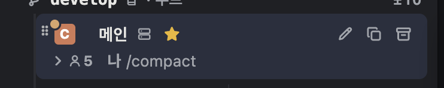

요청: 별모양을 우클릭 했을 때 별도의 즐겨찾기 토글 행으로 두고, 아이콘도 하네스 아이콘 좌하단에 작은 별로
· 세션 추가 직후에 rename 버튼 누른 상태로
· 서브에이전트 숫자 없을 땐 붙어있는 게 낫겠습니다
. 프레임 안의 레일은 실제 CSS(dashboard-rail.css)를 그대로 쓰고, 바뀌는 규칙만 .v-after 아래 PROPOSED 블록에 있습니다.

--star (라이트 #c98a00 / 다크 #f2b632)..qdot), 우하단 바깥은 서브에이전트 숫자(.sbn) 자리라 겹치지 않습니다..qdot처럼 행 바탕색 테두리를 둘러 아이콘·작업 중 링과 분리. 행이 호버·선택(.cur)되면 테두리 색도 따라감.StarHidden / Archived).opacity .6)이 생겨, 이름을 누르려다 별이 눌림 (빨간 점선)..rpop.rmenu)에 한 줄 추가 · 프레임은 실제로 동작합니다dashboard-rail-popovers.js rpRowMake / railRowMenu). 이름 바꾸기 · 주소 복사 · 다른 세션 아래로 이동 · 상위 세션에서 분리 · (호스트 세션이면) 세션 메뉴. 새 항목은 복사 바로 다음, 같은 .rmi 모양.RAIL_FOCUS)에서는 .star가 빠져 오히려 짧아집니다.--star로 채운 별.star/unstar)를 보내 레일 스왑이 행을 즐겨찾기 묶음 위/아래로 옮깁니다. 실패하면 배지를 되돌리고 토스트.POST /agents/leads가 201 {id}로 답하면 지금도 go("/s/<id>")로 새 세션 페이지를 엽니다. 이동 직전에 일회용 표시(sessionStorage)를 남기고, 새 페이지의 레일이 그 행을 처음 그릴 때(로드 또는 다음 레일 스왑의 railMarks) 한 번 연필을 누릅니다. 라우트·데이터 변경 없음.dashboard-rail.css:362 .rail .hiw { … width: 28px; … }: 16px 아이콘 + 서브에이전트 숫자용 12px 칸을 항상 확보. 여기에 링크의 gap: 6px(:299)가 더해져 아이콘~이름이 늘 18px.:363 .rail .sbn { position: absolute; left: 18.5px; bottom: -3px; … }: 숫자는 그 빈 칸에 절대 위치로 놓임. 의도는 주석 :334-343 “kept whether or not subagents run, so the name never moves”..hiw의 고정 폭 제거, .sbn은 흐름 안으로 (아이콘 뒤 2.5px, 같은 아래첨자 높이). 숫자 없음 6px(현재 18px), 한 자리 15px, 두 자리 21px (실측)..rkids)도 같은 .hiw라 함께 붙습니다..kidtog)이고 이번 변경과 무관합니다.dashboard.tmpl:447 (rrow): <button class="star"> 삭제. .hiw 안에 .hstar 배지({{icon "pin"}}, role=img, “즐겨찾기”)를 .Starred일 때 추가. 즐겨찾기를 걸 수 있는 행(not (or .StarHidden .Archived))의 .rs에 data-star="0|1": 메뉴가 항목을 보일지와 현재 상태를 여기서 읽음.rail.js:201-205 starred(): .star[aria-pressed] 대신 행의 data-star="1"을 읽음. 이것을 쓰는 드롭 규칙(:215, :242, :312, :439)은 그대로.dashboard-rail.js:79 RAIL_FOCUS에서 ".star" 제거 · :374-394 railRename에서 star(입력 위치 at와 hide 목록) 제거 → 입력은 항상 .drtail 앞 · :455-467 클릭의 별 분기를 railStar(row, on)으로 옮김 (배지·data-star 즉시 반영, layoutSave({op: "star"|"unstar"}), 실패 시 되돌림).dashboard-rail-popovers.js:598-613 rpRowMake P.open: 복사 항목 다음에 즐겨찾기 항목 (data-star가 있는 행만, 아이콘 pin, 해제일 때 채운 별). 맨 위 주석(:519-535)의 항목 목록도 갱신.dashboard-rail.css:236-247(.star)와 :265의 .rkids .star 삭제, PROPOSED 블록의 .hstar · --rs-ground · .rmstar 추가.internal/wsi18n/tables/*.json): js.rail.menu.star “즐겨찾기에 추가”, js.rail.menu.unstar “즐겨찾기 해제”, 배지 라벨(예: rail.starred “즐겨찾기”). 기존 rail.star(“별표: 이 세션을 워크트리 맨 위에 고정”)는 쓰이지 않게 되므로 메뉴 항목 title로 옮기거나 삭제.rail_test.go:1175-1200(class="star" 단언), railscript_test.go:53, :101(.star 스텁), rail_layout_test.go:754, :785(aria-pressed="true" 대기)를 새 마크업 기준으로./rail/layout의 star/unstar op, RailRow.Starred/StarHidden 그대로.dashboard-leads.js:224-232 submit(): 201 {id}를 받은 뒤 go() 직전에 sessionStorage 일회용 키(예: ws.dashboard.renameNew = id)를 씀. 별도 SSE 이벤트는 없고, 새 행은 새 페이지의 서버 렌더 레일(또는 다음 레일 스왑)에 들어 있음.dashboard-rail.js:55 railMarks()(로드 :619 + 모든 레일 스왑 뒤 실행) 끝에서: 키가 있고 그 id의 행이 레일에 있으면 키를 지우고 railRename(row) 한 번. 짧은 기한(예: 10초)이 지나면 키만 지움.railRename(dashboard-rail.js:374) / labelStart(dashboard-actions.js:176)는 변경 없음.dashboard-rail.css:362 width: 28px 삭제 · :363 .sbn을 position: relative; bottom: -3px; align-self: flex-end; margin-left: 2.5px로 · 주석 :334-343의 “kept whether or not subagents run, so the name never moves” 수정.rail_kid_busy_test.go:111-125는 마크업만 확인하므로 그대로 통과할 것으로 예상).